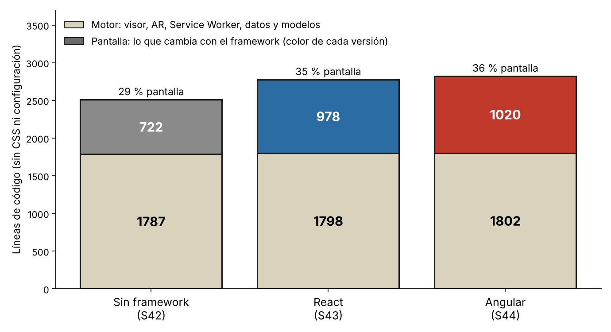
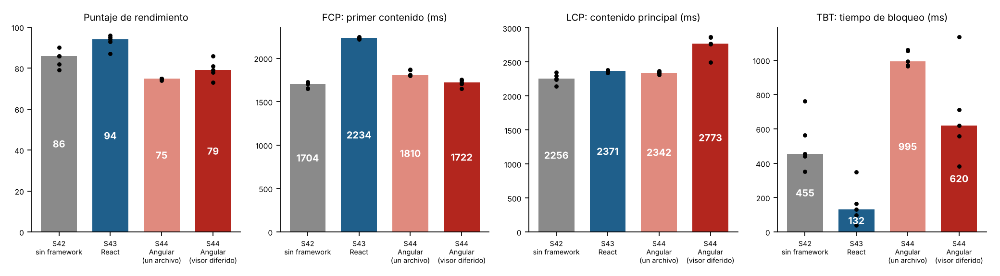

Comparación y cierre
Decidir con evidencia
Ninguna versión gana en todo. Hoy se ponen las tres juntas, se dice lo que las cifras no pueden decir y se cierra el Sub-bloque B.
Objetivos de aprendizaje
- Comparar tres versiones con una misma lista de pruebas y las mismas cifras.
- Ubicar cuánto del proyecto es motor y cuánto es pantalla.
- Decidir con preguntas concretas y dejar la decisión escrita.
- Ejecutar la lista de verificación final sobre cualquier versión.
- Cerrar el Sub-bloque B con las prácticas que sobreviven a cualquier tecnología.
Recursos: checklist-atlas.zip
Funciona sobre cualquier versión compilada.
Para comparar, hay que comparar lo mismo
El mismo motor
Visor, AR, Service Worker, sensores, cámara, modelos y manifest: los mismos archivos en las tres (una línea distinta en tres de ellos).
El mismo HTML por fuera
Mismos id y clases: una prueba que no sabe qué framework hay detrás sirve para las tres.
Las mismas condiciones
Lighthouse 13.6.0, móvil simulado, cinco corridas, mediana, intercaladas en la misma sesión.
Cuánto depende realmente del framework

La misma lista, tres versiones, sin cambiar las pruebas
| Prueba | Sin framework (S42) | React (S43) | Angular (S44) |
|---|---|---|---|
| S39 · AR con superficies anillo de superficie, anclas, gestos, plan B sin hit-test ni anclas, reintento | ✓ 30 comprobaciónes | ✓ 30 comprobaciónes | ✓ 30 comprobaciónes |
| S40 · Modelos y AR tres modelos, piezas, ficha ampliada, uso sin conexión, rastro de la sesión de AR | ✓ 38 comprobaciónes | ✓ 38 comprobaciónes | ✓ 38 comprobaciónes |
| S41 · Instalación y conexión botón «Instalar», cancelar, standalone, iPhone, banda «sin conexión» | ✓ 13 comprobaciónes | ✓ 13 comprobaciónes | ✓ 13 comprobaciónes |
| S42 · Lista de verificación manifest, instalabilidad según Chrome, Service Worker, sin conexión, CLS, dibujo bajo demanda | ✓ 12 comprobaciónes | ✓ 12 comprobaciónes | ✓ 12 comprobaciónes |
| Nota conservada escribir una nota y marcar un favorito en otra tarjeta no borra lo escrito | ✗ 1 fallo | ✓ 1 comprobación | ✓ 1 comprobación |
Una sola diferencia en toda la tabla
render() reescribe todo el catálogo al marcar un favorito, y la nota escrita en otra tarjeta desaparece.La lista de verificación final: 13 puntos, solo desde fuera
| Puntos | Qué comprueba |
|---|---|
| 1 | Idioma, viewport, descripción, un <main>, contexto seguro |
| 2 · 3 | Manifest sin errores y sin errores de instalabilidad, preguntándole a Chrome |
| 4 · 5 | Service Worker activo, precaché completo, la app abre con el servidor caído |
| 6 | CLS menor que 0,1 |
| 7 a 12 | Dibujo bajo demanda: quieta no dibuja; girar, elegir pieza, cambiar de modelo y redimensionar sí |
| 13 | La nota escrita no se pierde al marcar un favorito en otra tarjeta |
La misma lista, ejecutada sobre las tres
$ ATLASDIR=s42 node checklist-atlas.js
4) service worker → {"activo":true,"controla":true,"precache":9}
13) escribir una nota y marcar favorito en otra tarjeta → nota conservada: ""
✗ FALLÓ: la nota escrita no debe borrarse al marcar un favorito
RESULTADO: hay 1 fallos
$ ATLASDIR=s43 node checklist-atlas.js
4) service worker → {"activo":true,"controla":true,"precache":10}
13) escribir una nota y marcar favorito en otra tarjeta → nota conservada: "repasar el controlador"
RESULTADO: todo en orden
$ ATLASDIR=s44 node checklist-atlas.js
4) service worker → {"activo":true,"controla":true,"precache":9}
13) escribir una nota y marcar favorito en otra tarjeta → nota conservada: "repasar el controlador"
RESULTADO: todo en ordenCada versión sacó a la luz algo distinto
| Versión | Problema | Cómo se encontró |
|---|---|---|
| Sin framework | render() rehacía todo: la nota desaparecía | Al escribir la prueba de la nota y ejecutarla sobre la S42 |
| React | Efecto sin limpieza (dos lienzos); oyente de instalación tardío; instrumento de prueba que no serializaba nodos | Quitar la limpieza a propósito; leer el código; error «circular structure» |
| Angular | Todo en un solo archivo; sin StrictMode; ruta base y Node nuevos; .js sueltos en src/ | La prueba de la S42 (7 entradas); construir una prueba; revisar el contenido del zip |
Una corrección a la Sesión 44
tsc se ejecutaba sin noEmit y dejaba cinco archivos .js dentro de src/: base.js, db.js, descargas.js, sw.js, modelos/tipos.js. La compilación era idéntica con y sin ellos, pero ensucian el repositorio."noEmit": true en compilerOptions de tsconfig.sw.json. El zip publicado ya está corregido.Las cifras, juntas
| Medida | Sin framework | React | Angular (visor diferido) |
|---|---|---|---|
| Rendimiento (mediana de 5) | 86 | 94 | 79 |
| FCP | 1704 ms | 2234 ms | 1722 ms |
| LCP | 2256 ms | 2371 ms | 2773 ms |
| TBT | 455 ms | 132 ms | 620 ms |
| CLS | 0,05 | 0 | 0 |
| Precaché | 9 · 558,82 KiB | 10 · 778,17 KiB | 9 · 753,84 KiB |
| Líneas · archivos de pantalla | 722 · 2 | 978 · 16 | 1020 · 28 |
| Lista de verificación (13 puntos) | 12 de 13 | 13 de 13 | 13 de 13 |
| Node en la publicación | 20 | 20 | 22.22.3 o superior |
| Service Worker propio | vite-plugin-pwa | vite-plugin-pwa | Dos scripts propios |
Las cinco corridas de cada versión

Preguntas, no recetas (1/2)
| Pregunta | Qué dice esta app |
|---|---|
| ¿Cuánta pantalla hay? | 29 a 36 % del código. Con poca pantalla y un solo desarrollador, la versión sin framework es la más liviana y la que muestra antes el primer contenido; la disciplina de no reescribir todo la pone el programador. |
| ¿Va a crecer? | La pantalla creció 35 a 41 % con framework, en archivos pequeños que se prueban y reutilizan. Eso se compra con el peso extra. |
| ¿Quién la mantiene? | No sale en ninguna cifra y suele decidir: un equipo que conoce un framework rinde más con él. |
| ¿Importa el primer contenido? | React tardó 530 ms más (2234 contra 1704). El remedio conocido es generar el HTML antes (prerender o servidor): no se probó. |
Preguntas, no recetas (2/2)
| Pregunta | Qué dice esta app |
|---|---|
| ¿Hay motor propio? | Con 64 a 71 % del código fuera del framework, migrar costó sobre todo pantalla. Separar el motor primero fue la mejor decisión del Sub-bloque. |
| ¿Tienes pruebas? | Sin ellas, cada migración habría sido a ciegas. Con ellas, las dos expusieron varios defectos reales. |
| ¿Qué herramientas exige? | React con Vite: un plugin. Angular: dos scripts propios y una versión de Node más nueva. Costo de arranque, no de uso diario. |
Lo que estas cifras no pueden decir
- Una sola app, pequeña: con diez veces más pantalla las proporciones podrían cambiar.
- Un solo entorno de medida: Chromium sin GPU y lentitud simulada. Compara versiones, no mide tu teléfono.
- El LCP de Angular diferido (2773 ms) sin explicar: la hipótesis no se midió.
- Sin prerender ni servidor: lo que más cambiaría el primer contenido de React y Angular.
- Dispersión grande: 73 a 86 en cinco corridas de la misma versión.
- Mantenimiento, contratación, ecosistema, aprendizaje: no se midieron y suelen pesar más que 50 ms.
Ejecuta la lista sobre tu versión
- Descomprime
checklist-atlas.zip;npm installynpx playwright install chromium(~150 MB). - Compila tu proyecto (
npm run build): debe existirdist. ATLASDIR=ruta/a/tu/proyecto node checklist-atlas.js
(PowerShell:$env:ATLASDIR="ruta\a\tu\proyecto"; node checklist-atlas.js)- Lee la última línea; cada
✗ FALLÓnombra el punto. - En el teléfono: gira, piezas, «Ver en AR», «Instalar», modo avión.
Actividad 1: Ejecuta la lista sobre dos versiones
Ejecuta la lista sobre dos versiones
Ejecuta checklist-atlas.js sobre tu versión elegida y sobre la de la Sesión 42 (descomprime su zip, instala y compila). Compara punto por punto.
Entregable: las dos salidas y un párrafo sobre cada diferencia (debe aparecer el punto 13).
Actividad 2: Rompe un punto a propósito
Rompe un punto a propósito
Elijan un punto (quitar meta name="description", cambiar el start_url del manifest…), compilen, ejecuten la lista y confirmen que falla. Restauren y repitan.
Para pensar: ¿qué tipo de defecto no podría detectar nunca esta lista?
Entregable: el cambio, la línea que falló y su respuesta.
Actividad 3: Un registro de decisión
Un registro de decisión
Describe en dos o tres líneas un proyecto distinto (qué hace, cuántas pantallas, quién lo mantiene). Escribe un registro de una página: Contexto · Opciones · Decisión · Razones (tres, con una cifra o prueba) · Riesgos · Qué no sabemos.
Entregable: el registro. Se valora más «Qué no sabemos» que una decisión «correcta».
Actividad 4: Mide tu versión
Mide tu versión
Con Lighthouse (incógnito, «Móvil») corre tres veces tu versión publicada y anota la mediana de rendimiento, FCP, LCP y TBT. Compara la dirección con la tabla de cifras.
Entregable: tu tabla y una frase sobre qué número cambia más entre corridas.
Cinco prácticas que sobreviven a cualquier tecnología
| Práctica | Dónde se vio |
|---|---|
| Separar el motor de la pantalla | Dos migraciones sin tocar visor, AR ni Service Worker |
| Probar antes de cambiar | Las pruebas de la S39 a la S42 pasaron intactas sobre React y Angular |
| Probar la prueba | Quitar la limpieza a propósito y ver que falla (S43, S44) |
| Medir con método | Cinco corridas, mediana, intercaladas, con la dispersión a la vista |
| Decir lo que no se probó | LCP sin explicar, prerender sin probar, corrección de la S44 |
Resumen de la sesión
- El motor es el 64 a 71 % del código y es igual en las tres; el framework decide el resto.
- La misma lista de pruebas pasa sobre las tres, salvo la de la nota, que delata a la versión sin framework.
- Ninguna versión gana en todo: mejor primer contenido (sin framework), mejor puntaje (React), mayor costo de herramientas (Angular).
- Se decide con preguntas, no con la moda; lo que las cifras no dicen importa tanto como lo que dicen.
- Una lista de verificación comprueba lo que se pensó en comprobar: hay que revisar el producto con ojos frescos.